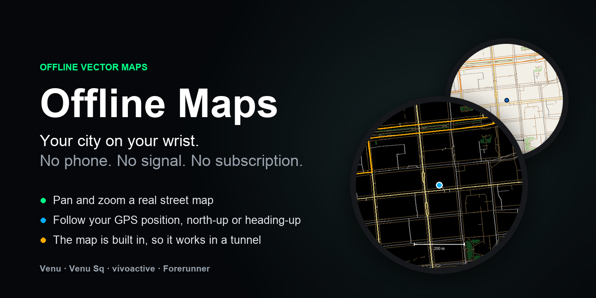

A real vector street map for Garmin watches that ship no map of their own. The map is data stored on the watch, not tiles streamed from a phone.
Install from the Connect IQ store
Free and open source. If it works for you, a review on the store listing helps.
Source on GitHub

The dark theme and the light theme.
Only to download the city you chose. After that the map works with no phone and no signal, forever. On a plane, in a tunnel, abroad with the phone left at the hotel.
The watch stores a single city. Choosing another one removes the previous one. There is not room for two.
The map lives in the watch's own storage, not in the app binary. The app is the same size whichever city you pick, and whether you have picked one at all.
The whole project is open source. The city maps are plain files hosted in the project's own GitHub repository, so you can see exactly what the watch downloads.
Either way works, and the two stay in step.
In Garmin Connect, open the settings for this app and type a city name into the City field.
Sizes are what the city occupies in the watch's storage.
| City | Size on watch | Blocks |
|---|---|---|
| Berlin | 71 KB | 20 |
| Madrid | 56 KB | 16 |
| Murcia | 38 KB | 12 |
A downloaded city is an orientation map: major roads, water, rail and parks. It has no residential streets.
The reason is space. The watch gives the app about 128 KB of storage to hold a city, and street-level detail does not fit in it. Use this to find your bearings and to see where you are against the shape of the city, not to navigate a specific address.
Street-level detail is possible, but only by compiling a map into a custom build of the app yourself. The repository has the tooling for that.
24 products across four families. The store listing is the authoritative check for your own watch.
venu2 venu2plus venu2s venu3 venu3s venu441mm venu445mm venux1
venusq2 venusq2m
vivoactive5 vivoactive6
fr165 fr165m fr170 fr170m fr265 fr265s fr57042mm fr57047mm fr70 fr955 fr965 fr970